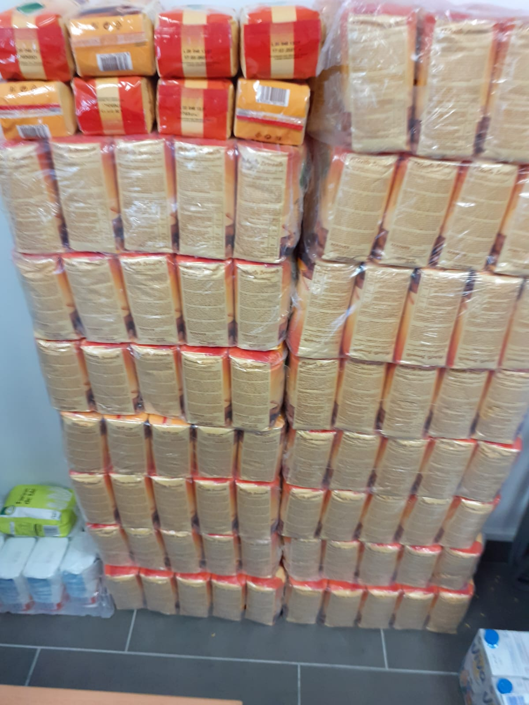
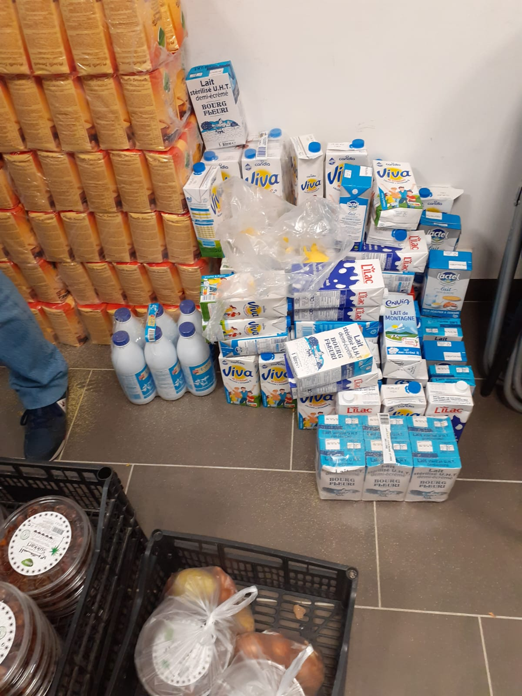
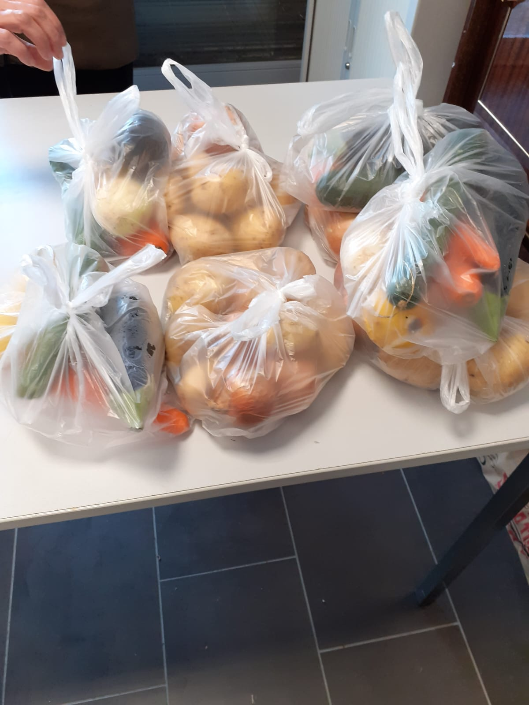
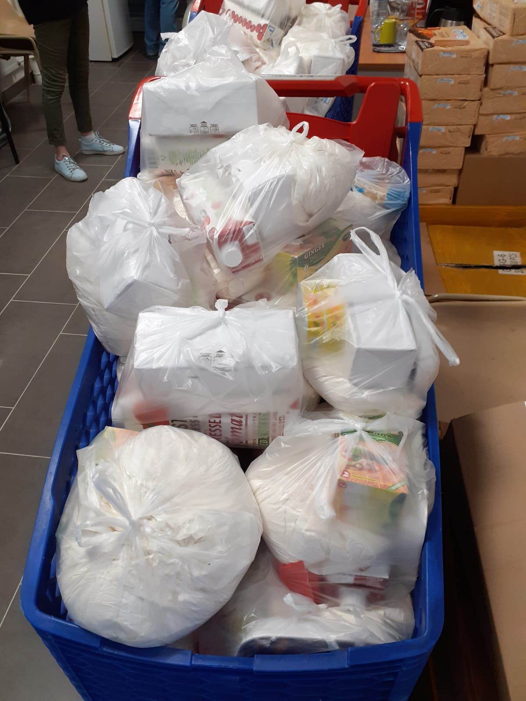
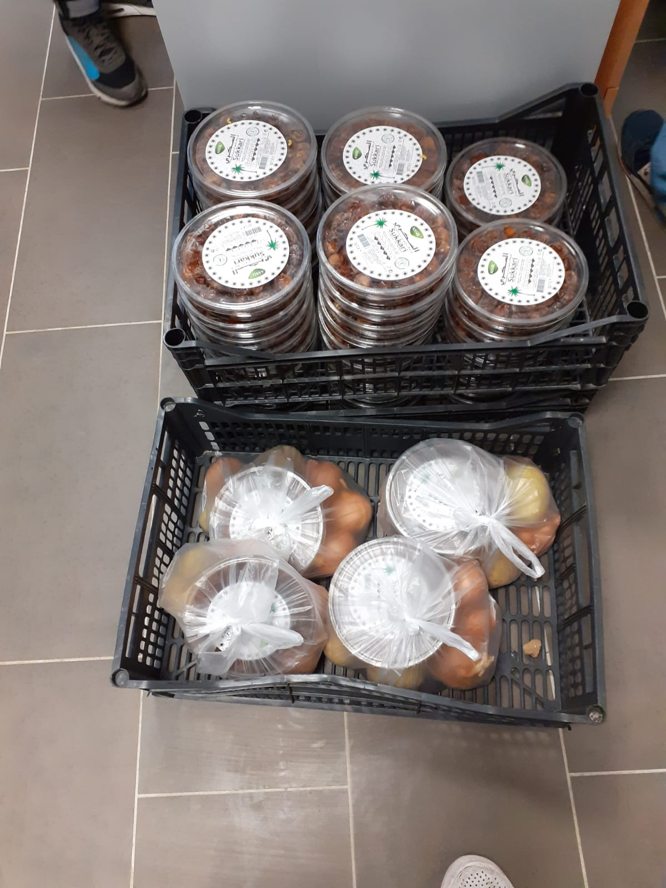
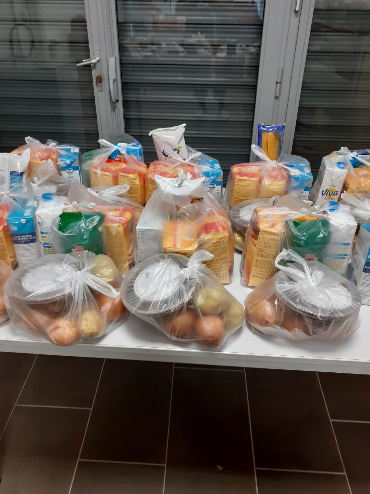
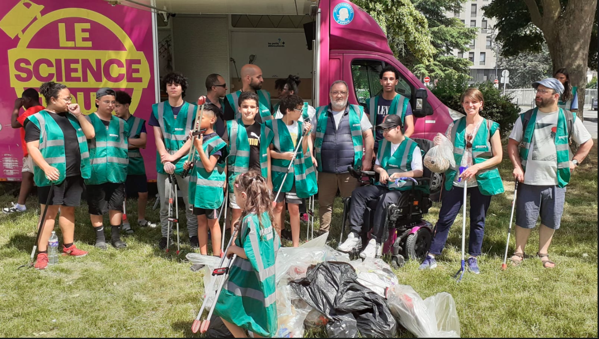
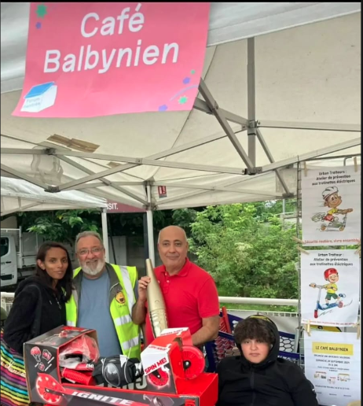

L'Association Café Balbynien s'engage au quotidien pour la solidarité, le lien social et le bien-être des habitants de Bobigny.
Chaque mois, l'association prépare et distribue des colis alimentaires aux familles dans le besoin à Bobigny. Pain de mie, lait, fruits, légumes, produits du quotidien… rien n'est laissé au hasard pour apporter un soutien concret et digne aux bénéficiaires.






L'association organise régulièrement des soirées conviviales et festives avec des moments de partage, de rencontre et de générosité.
L'association mobilise les jeunes de la cité pour des actions de ramassage et de tri des déchets. Équipés de pinces et de sacs, enfants et bénévoles prennent soin de leur environnement et apprennent les bons gestes pour un cadre de vie plus propre.
Une action citoyenne et éducative qui sensibilise les plus jeunes à la propreté et au respect de l'espace public.

L'association aide pour les inscriptions sportives des enfants de familles en difficulté financière. Parce que le sport est un droit pour tous, aucun enfant ne doit être exclu faute de moyens.
Foot, basket, arts martiaux, natation… l'association accompagne chaque famille dans les démarches et finance tout ou partie des frais d'inscription.

L'association est ouverte à tous. Bénévolat, participation aux événements… chaque contribution compte !